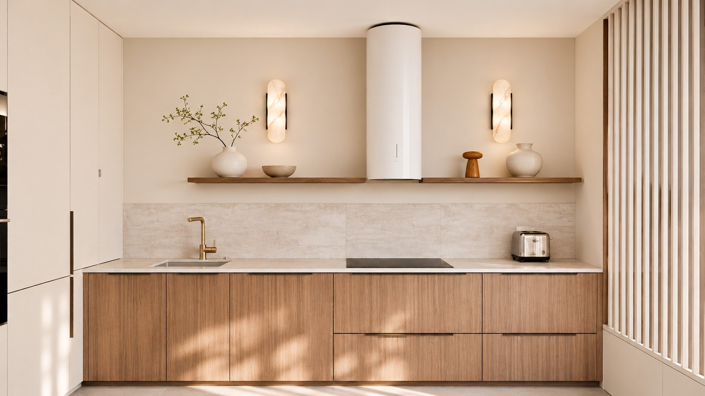
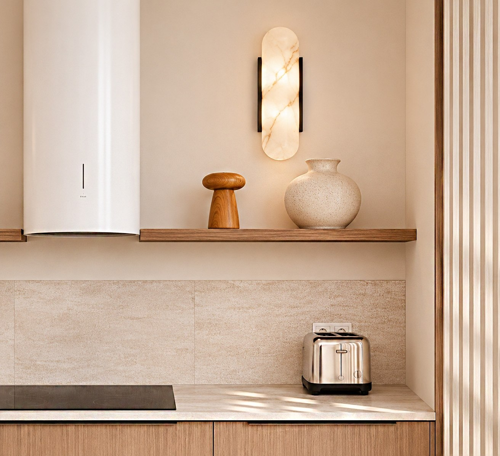
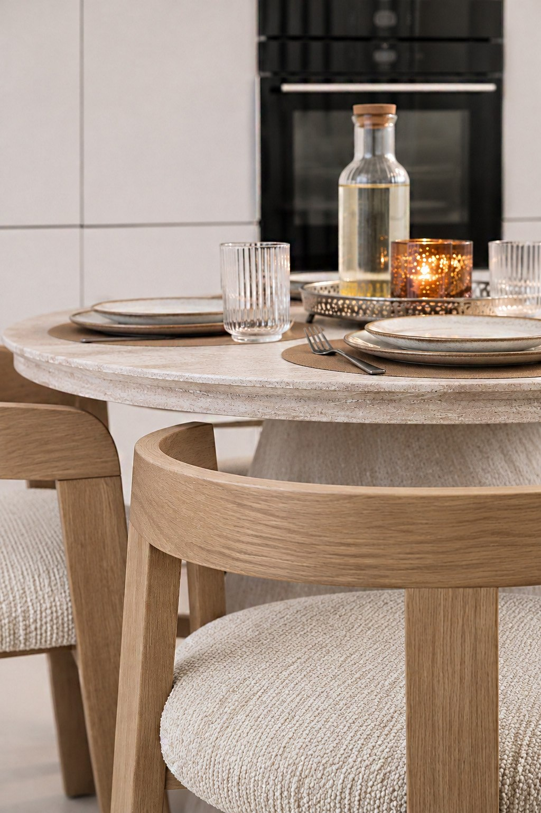

Kitchen design · Japandi · Residential
A Study in Balance

Concept
This project explores the balance between functional requirements and visual simplicity.
Designed to respect a pre-existing architectural layout, the kitchen had to offer generous storage while preserving an open, uncluttered atmosphere.
The approach was to rethink the traditional organisation of kitchen elements in order to create a lighter composition, in harmony with the surrounding architecture.
Composition
The visual identity of the kitchen rests on a dialogue between vertical and horizontal lines.
A full-height storage wall provides substantial capacity. Finished in a neutral shade close to that of the walls, it blends visually into the architecture and so softens its volume.
By contrast, the preparation area is deliberately left open, with no traditional wall cabinets. A timber wall shelf, a sculptural hood and the continuous line of the base units create a strong horizontality.
This interplay of volumes creates a visual balance, reconciling functionality with architectural clarity.

Materials & Palette
The palette is built around neutral, soft and warm tones.
The wood-finish fronts bring depth and visual warmth to the base units, while the stone-effect surfaces introduce visual continuity and a certain softness in the preparation area.
The tone-on-tone choice for the full-height storage creates a discreet architectural backdrop, letting the contrasts of finishes and the carefully selected details speak.
The open shelf holds a few decorative pieces with restrained lines, with ceramic objects and subtle touches of greenery completing the composition.



Atmosphere
Inspired by the principles of Japandi, this kitchen combines simplicity of form, a controlled palette and functionality.
The result is a space where generous storage does not come at the expense of visual lightness. A pared-back composition, defined by balanced proportions, contrasting finishes and a subtle dialogue between horizontal and vertical lines.
A functional space built around simplicity, balance and a timeless aesthetic.